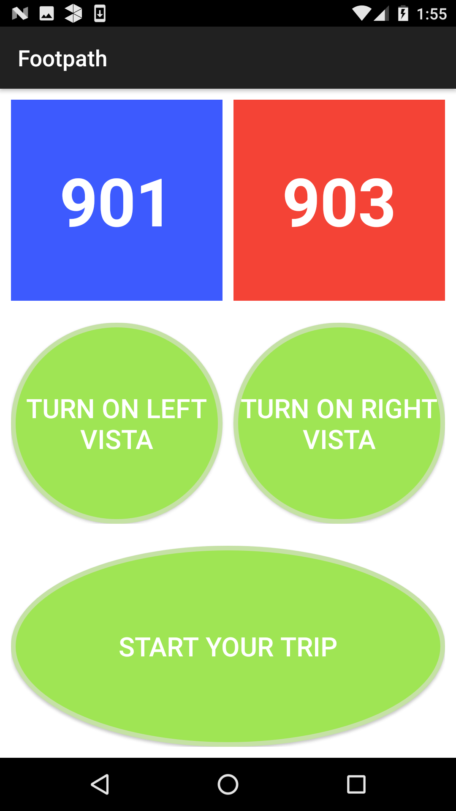
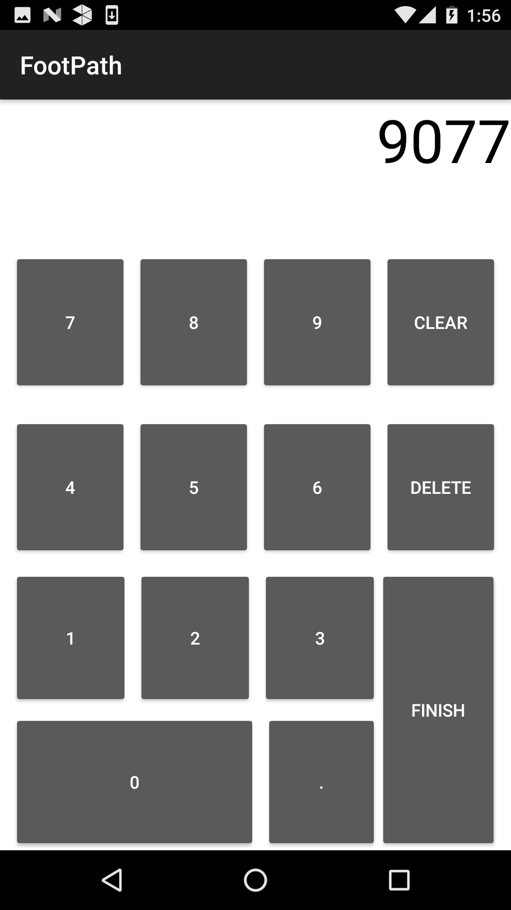
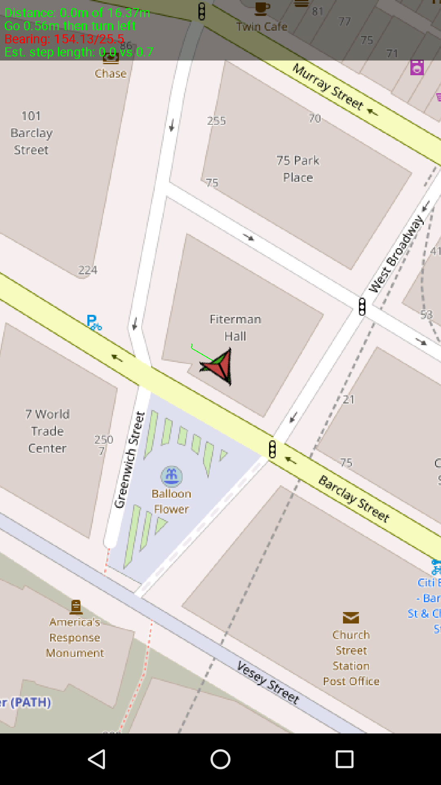

Erii Sugimoto
Hello, I am a Junior Computer Science student at Brooklyn College of City University of New York. I currently work as a research assistant at Borough of Manhattan Community College.
Research Project
Indoor Navigation Mobile Application for Visually Impaired



Although today outdoor navigation technology is readily available to help people’s day to day lives, indoor navigation technology has yet to become so. With many buildings having more and more complex structures, the need for indoor navigation technology is obvious, especially for those who are visually disadvantaged. Our project is to create an indoor navigation mobile application for people with visually impairments. We are making improvements on an existing project FootPath.
- Android
- Proximity Sensor
- Localization Algorithms